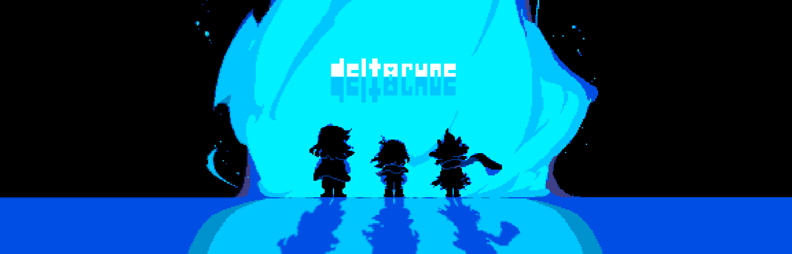

Deltarune é um jogo de rpg baseado em turnos onde a violência é desnecessária para zerar.
O jogo funciona em turnos, onde pode se escolher a ação de cada personagem, é possível, por exemplo, AGIR com um personagem e poupar o inimigo no próximo.

Batalhas funcionam exatamente como qualquer jogo de turnos, você age, o inimigo te ataca.

Atacar:
Atacar dá dano no inimigo baseado no seu status de ATK, que aumenta com a Arma que você tem equipado. Algumas armaduras também diminuem seu ATK em troca de DEF